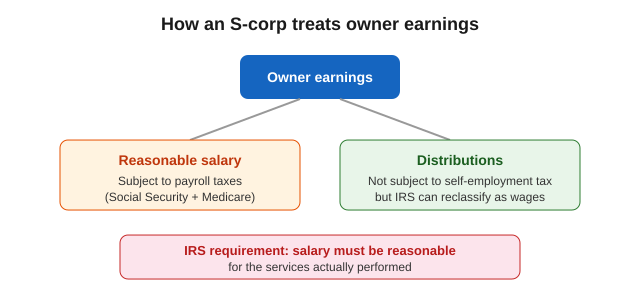
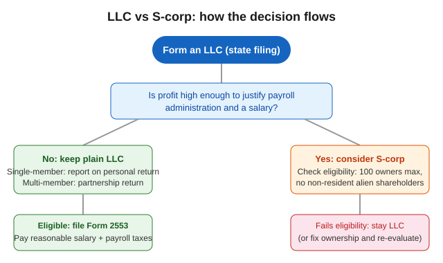

LLC vs S-Corp: Which Business Structure Is Right for You? (2026)
The short version
TL;DR: An LLC is a state-level structure that is simple to run and lets you choose your tax treatment, while an S-corp is a federal tax election (Form 2553) that can reduce self-employment tax if you pay yourself a reasonable salary.Last updated: 2026-08-14. Prices and details verified against official sources.
This guide is for founders deciding between forming an LLC and electing S-corporation status. The difference matters most for taxes: both structures limit personal liability, but they treat owner compensation very differently. The facts below come from the IRS, which is the authoritative source on both structures.
What is the difference between an LLC and an S-corp?
An LLC (limited liability company) is a business structure created under state law. Each state sets its own rules, and owners are called members. Most states allow single-member LLCs and do not cap the number of members, and members may include individuals, corporations, other LLCs, and foreign entities, per the IRS.
An S-corp is not a separate state filing. It is a federal tax election made by a corporation, or by another eligible entity such as an LLC, using Form 2553. S-corporation status lets income, losses, deductions, and credits flow through to shareholders, who report them on their personal tax returns at individual rates. That flow-through treatment avoids the double taxation that regular C-corporations face, according to the IRS.
How do LLC and S-corp taxes compare?
An LLC with two or more members is treated as a partnership by default for federal income tax; a single-member LLC is treated as a disregarded entity, meaning the business is reported on the owner's personal return. An LLC can instead elect to be taxed as a corporation using Form 8832, per the IRS.
The key tax difference for owners who work in the business is self-employment tax. LLC members generally pay self-employment tax on their net earnings from the business. The self-employment tax rate is 15.3%: 12.4% for Social Security plus 2.9% for Medicare, per the IRS. The Social Security portion applies to the first $168,600 of combined earnings for 2024, and an additional 0.9% Medicare tax applies above $200,000 for single filers.
An S-corp splits the owner's earnings into two buckets: a salary (subject to payroll taxes) and distributions (not subject to self-employment tax). That split can produce a tax saving, but only if the salary is reasonable, and the IRS polices this closely.

| Dimension | LLC (default taxation) | S-corp |
|---|---|---|
| Structure created by | State law | Federal tax election on an existing entity |
| Owner title | Member | Shareholder |
| Default federal treatment | Partnership (multi-member) or disregarded entity (single-member) | Flow-through to shareholders |
| Owner earnings taxed as | Self-employment income (Schedule SE) | Reasonable salary (payroll taxes) plus distributions (no SE tax) |
| Owner limit | None in most states | 100 shareholders maximum |
| Shareholder types | Individuals, corporations, other LLCs, foreign entities | Individuals, certain trusts, estates only; no corporations, partnerships, or non-resident aliens |
| One class of stock required | No | Yes |
| Annual filing | Owner's personal return (or partnership return for multi-member) | Form 1120-S plus Schedule K-1 to each shareholder |
What does an S-corp cost and require?
Election requires filing Form 2553 signed by all shareholders. An LLC that wants S-corp treatment files the same form. To qualify, the entity must be a domestic corporation with no more than 100 shareholders, only one class of stock, and only allowable shareholders - individuals, certain trusts, and estates. Partnerships, corporations, and non-resident alien shareholders are not allowed, and certain financial institutions and insurance companies cannot elect S status, per the IRS.
An S-corp files Form 1120-S annually and issues Schedule K-1 to each shareholder, and it pays employment taxes through Forms 941 and 940 for employees, including shareholder-employees. An LLC without employees has none of that payroll machinery unless it chooses to add it.
What is the reasonable compensation rule?
This is the rule that makes or breaks S-corp tax savings. The IRS requires an S-corp to pay a shareholder-employee reasonable compensation for services before making non-wage distributions to that shareholder. The IRS has the authority to reclassify distributions as wages subject to employment taxes, and courts have repeatedly upheld that authority, including in Joly v. Commissioner (1998) and David E. Watson, PC v. U.S. (8th Cir. 2012).
The IRS determines reasonableness by looking at what generates the corporation's gross receipts: the shareholder's own services, the services of other employees, or capital and equipment. If the shareholder's personal services drive the revenue, most payments to the shareholder must be wages. Factors include training and experience, duties, time devoted, and what comparable businesses pay.
When should you pick an LLC instead?
Pick a plain LLC when simplicity matters more than tax optimization: you are a solo founder with modest profit, you expect losses in the early years (LLCs pass losses through cleanly), or you want the flexibility to change tax treatment later without dissolving anything. An LLC can elect S-corp taxation in a later year when profit justifies the added administration, and it can also elect corporate treatment with Form 8832, which generally cannot take effect more than 75 days before the election is filed or later than 12 months after, per the IRS.

How do you decide in five minutes?
- Estimate next year's owner profit; S-corp administration generally pays off only above roughly $50,000 to $60,000 of distributable profit.
- Check ownership: a non-resident alien partner or more than 100 owners rules out an S-corp.
- Decide if you want payroll: an S-corp requires payroll processing for your own salary; an LLC does not.
- Confirm the election deadline with a tax professional, because Form 2553 has strict timing rules.
FAQ
Is an S-corp better than an LLC?
Not universally. An S-corp can reduce self-employment tax on distributions, but it adds payroll administration, filing requirements, and the reasonable-compensation rule. For low-profit businesses, a plain LLC is usually cheaper and simpler.
Can an LLC elect S-corp status?
Yes. An LLC that meets the S-corp eligibility requirements can elect S-corporation taxation by filing Form 2553 with the IRS.
Do S-corp owners pay self-employment tax?
They pay payroll taxes (Social Security and Medicare) on their reasonable salary, but not self-employment tax on distributions. That split is the main reason owners elect S status.
What happens if an S-corp owner takes no salary?
The IRS can reclassify the distributions as wages and assess the employment taxes that were avoided, plus penalties and interest. Court cases including Joly v. Commissioner support this.
How much does it cost to form an LLC vs an S-corp?
LLC formation costs vary by state, typically a filing fee paid to the secretary of state plus optional formation-service fees. An S-corp adds no state formation fee (it is a federal election), but adds ongoing payroll and tax-preparation costs.